2.8s
0–100 km/h
740hp
Maximum power
690Nm
Maximum torque
250km/h
Top speed, limited
1,200kg
Dry weight
01Sport Prototipo
The third act.
The GT Super SP is the final and most radical chapter of the GT Super, and a tribute to the prototypes that raced through the golden era of motor sport.
Crafted entirely in carbon fibre, its body grows by 130 mm across the wheel arches, and everything beneath it has been redrawn to match: new subframes, new suspension geometry, a larger Gloria and brakes made for the circuit.

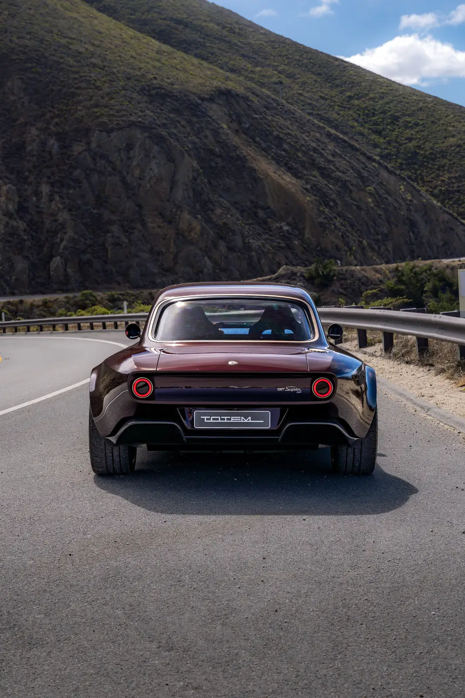
02The key
The key is a rocket. So is the car.
Even the key of the Sport Prototipo is a declaration of intent. Shaped like a rocket, fins and all, it carries the model’s script along its body and stands on the console like a craft on its launch pad, among the machined cones of the controls.
Turn it, and the comparison stops being a metaphor.
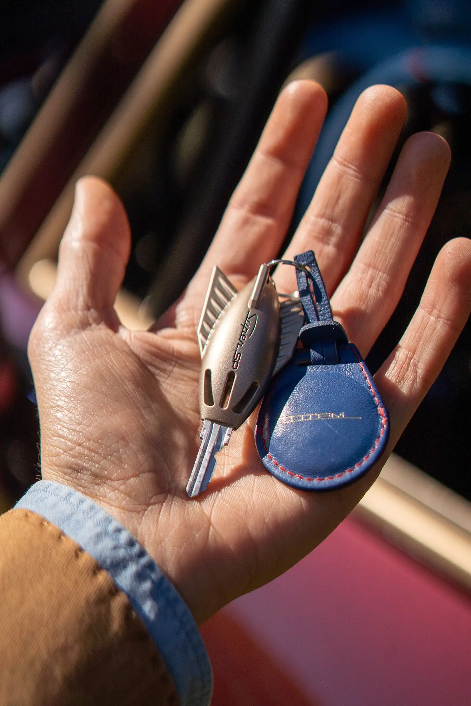
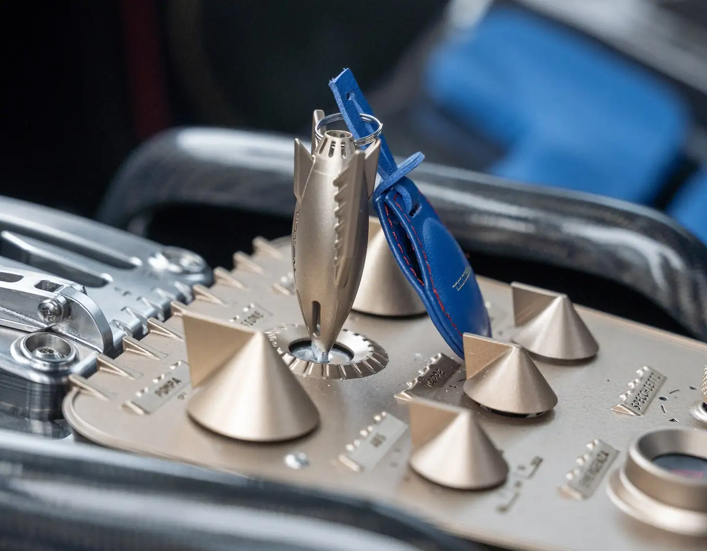
03Design
A wider stance.
A deeper lower intake leads the nose, while vents in the bonnet and wings help the cooling. Along the flanks, the side skirts carry the twin lateral exhausts; at the rear, sculpted outlets and a larger diffuser increase aerodynamic load and stability at speed.
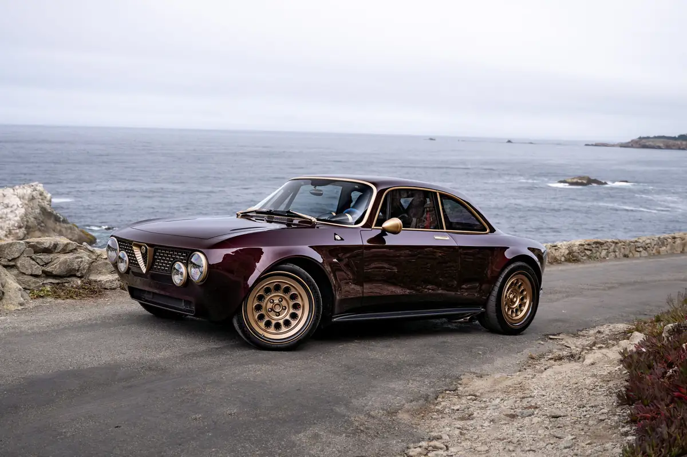
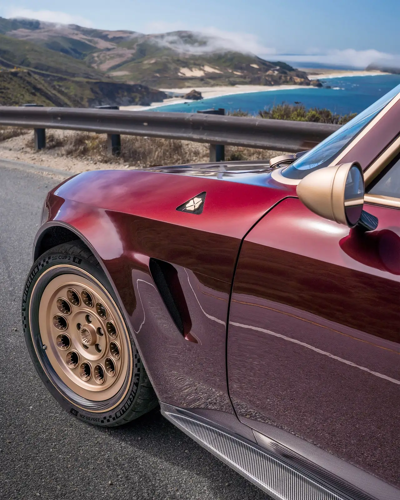
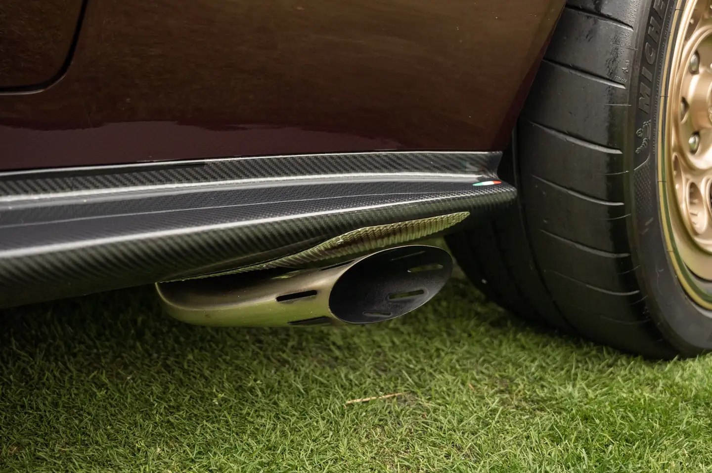
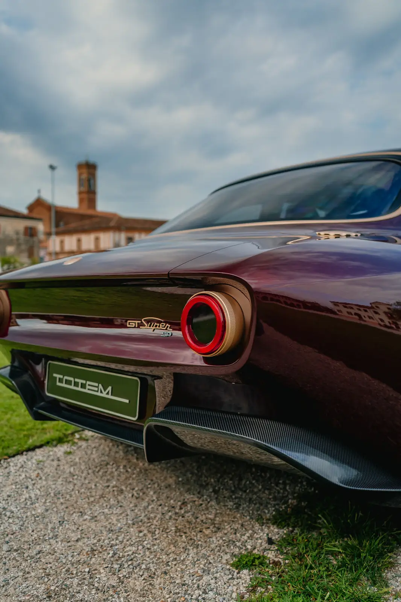
At Goodwood, in the light of evening.
The GT Super SP at the Goodwood Festival of Speed, where the hill climb asks a car to show both its manners and its pace.
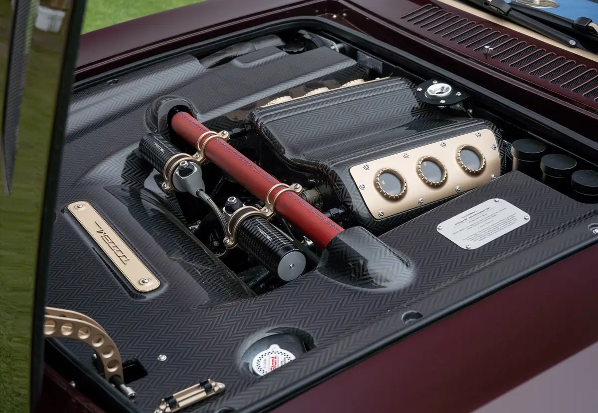
04The engine
Gloria SP, a heart unleashed.
Developed with Italtecnica Engineering, the ITV62 grows to 3.2 litres while keeping the compact 90-degree architecture, the dry-sump lubrication and a weight of just 150 kg.
Six transparent portholes in the gold-finished intake plates leave the trumpets of its individual throttle bodies on view. At the touch of a button, a power boost releases the full output for twenty seconds.
740hp
At 7,200 rpm
3.2l
Twin-turbo V6
20s
Power boost, on demand
150kg
Engine weight
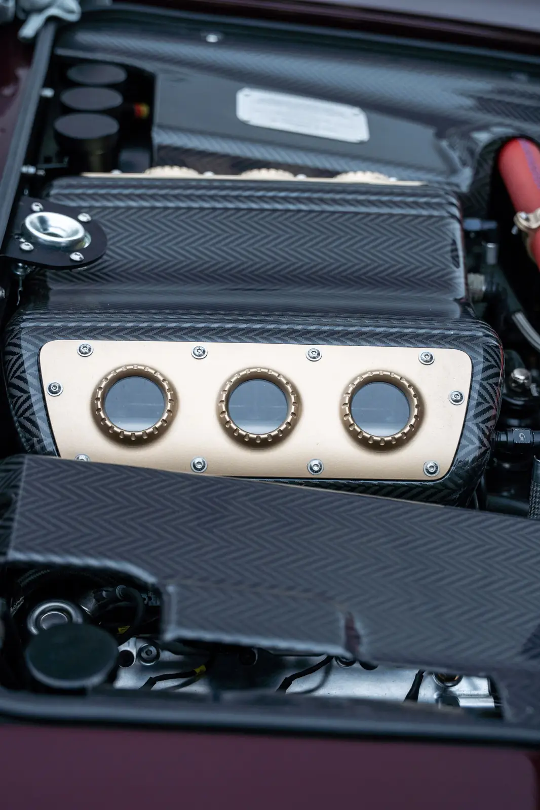
05Chassis
Carbon, down to the wheels.
On the SP the ORAM dampers are electronically adjustable as standard: two rotary selectors beside the steering wheel set front and rear independently. As standard, Brembo GT-S monobloc calipers clamp discs of 380 × 34 mm and 360 × 34 mm; on request, carbon-ceramic discs by SGL Carbon with Brembo GT-R calipers.
The SP rides on 19-inch monobloc wheels machined from billet aluminium, their barrels in carbon fibre to save weight where it matters most.
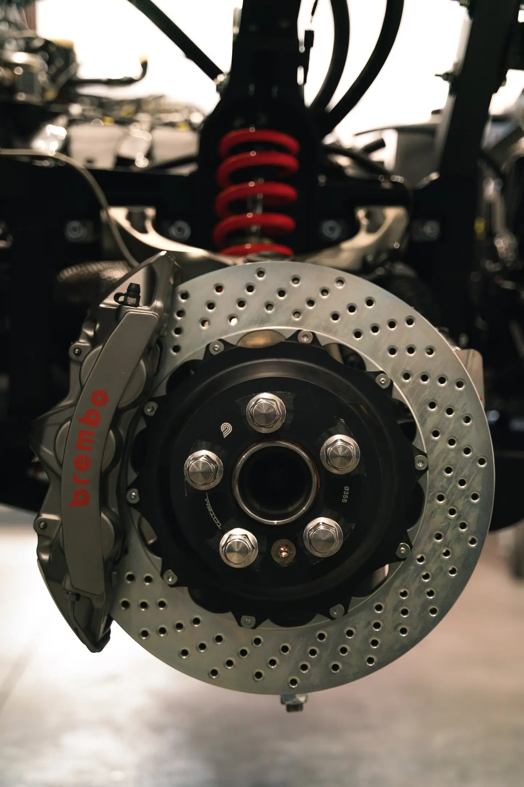
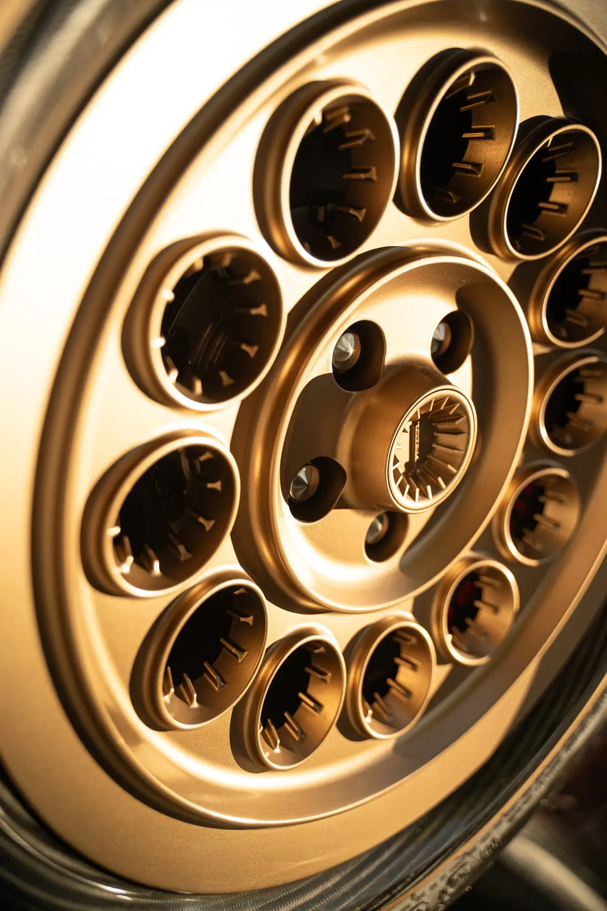
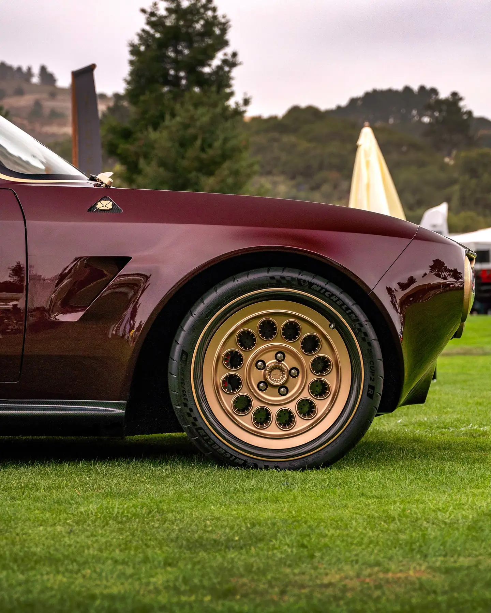

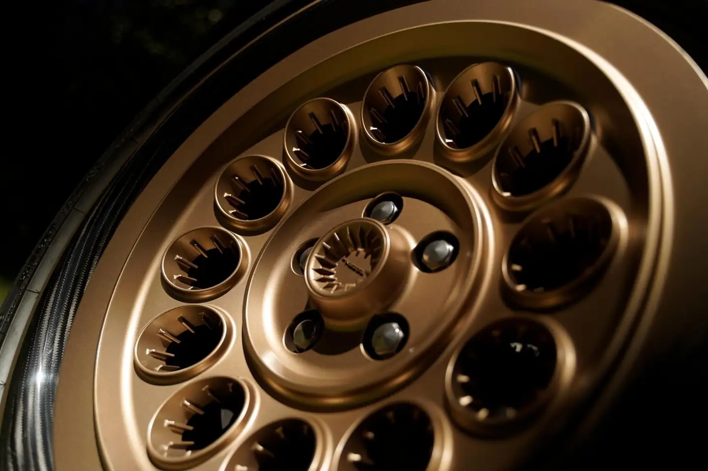
06Interior
An analogue spaceship, built for today.
Inside, the SP keeps the analogue soul of every Totem in sportier, more technical materials: a deep blue technical fabric, gold-finished metal, bare carbon fibre and seats shaped as carbon-fibre shells.
On the tunnel, a gold-finished plate gathers the controls beneath machined cones, each labelled in Italian: a cockpit laid out like a flight deck. A dedicated control releases the power boost for twenty seconds.
07Technical details
Performance and technical data.
The figures of the GT Super SP as built to its standard specification.
Engine & transmission
- Engine
- ITV62 “Gloria SP”, 90° V6, dry sump
- Developed with
- Italtecnica Engineering
- Displacement
- 3.2 litres, twin-turbo
- Max power
- 740 hp (544 kW) at 7,200 rpm
- Max torque
- 690 Nm
- Power boost
- 20 seconds, on demand
- Engine weight
- 150 kg
- Gearbox
- 6-speed manual, rear transaxle, billet open gate
- Clutch
- Dry double-disc, 200 mm
- Differential
- Limited-slip, rear-wheel drive
- Exhaust
- Capristo, twin lateral, valved
Performance
- 0–100 km/h
- 2.8 s
- Top speed
- 250 km/h, electronically limited
Dimensions & weight
- Length
- 4,274.5 mm
- Width
- 1,905 mm
- Height
- 1,316 mm
- Wheelbase
- 2,500 mm
- Dry weight
- 1,200 kg
- Fuel tank
- 75 l
Chassis & running gear
- Body
- Carbon fibre, 130 mm wider across the wheel arches
- Suspension
- ORAM, electronically adjustable front and rear
- Brakes
- Brembo GT-S, 6 + 4 pistons, 380 × 34 mm and 360 × 34 mm discs
- On request
- Carbon-ceramic discs with Brembo GT-R calipers
- Wheels
- 19" billet monobloc with carbon-fibre barrels
- Tyres
- Michelin Pilot Sport 5S or Pilot Sport Cup 2 R
Specifications, performance and range figures are indicative, may vary with configuration and market, and do not constitute a contractual offer.
08Visual archives
The Sport Prototipo, on the coast.
The cars photographed on the roads, villas and coastlines where they belong. Select any image to enlarge it.
On the road
Inside
In detail
09Brochure
The GT Super SP, in print.
22 pages · PDF · 6.0 MB. Every chapter of the car, from the carbon anatomy to the visual archives of its commissions.